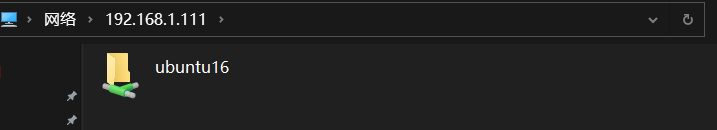
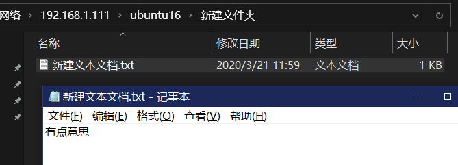
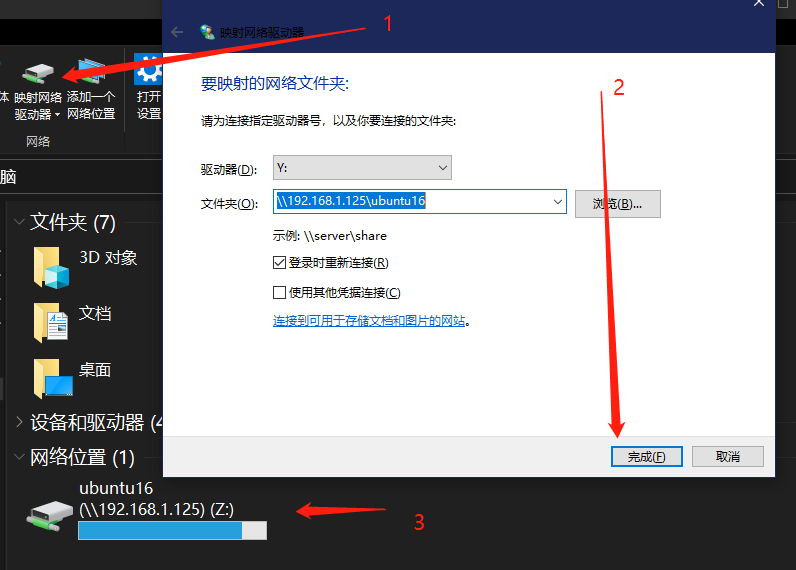

Samba是在Linux和UNIX系统上实现SMB协议的一个免费软件，由服务器及客户端程序构成。SMB（Server Messages Block，信息服务块）是一种在局域网上共享文件和打印机的一种通信协议，它为局域网内的不同计算机之间提供文件及打印机等资源的共享服务。本文主要讲解Linux安装samba实现共享文件夹。
samba安装
Linux切换国内软件源
默认源是国外的，由于墙的原因速度极慢。建议切清华、腾讯、淘宝的软件源皆可。如清华源如下；
1 | 备份现有源 |
1 | # 默认注释了源码镜像以提高 apt update 速度，如有需要可自行取消注释 |
:wq#保存退出
安装samba
1 | #更新软件源 |
sambap配置
打开配置文件 sudo vim /etc/samba/smb.conf 修改配置在文件末尾添加如下信息：
1 | # 自定义共享目录 |
如果共享目录没有，应该在服务器新建,并赋予777权限
1 | mkdir /home/share |
samba服务启动与查看
启动服务：sudo /etc/init.d/samba start
重启服务：sudo /etc/init.d/samba restart
停止服务：sudo /etc/init.d/samba stop
通常我们安装完之后是自动启动的，所以改完配置只需执行上面的restart即可。
上面启动任务时，会启动3个服务：nmbd.service, smbd.service和 samba-ad-dc.service.我们可以通过下面的命令分别看它们的状态：
1 | service nmbd status |
设置密码
经过上面的步骤，不出意外已经可以使用win来访问ip了，如果设置了用户密码，会弹出用户名密码的验证框。
samba设置密码如下
1 | #为配置的用户添加密码 |
在Windows上验证
在windows上验证后输入ip并新建文件夹/文件试试？


在Linux端查看显示如下：
1 | cat 新建文件夹/新建文本文档.txt |
至此，我们已经可以正常使用samba了。也可以在Windows上创建虚拟磁盘，Windows操作步骤参考下图
